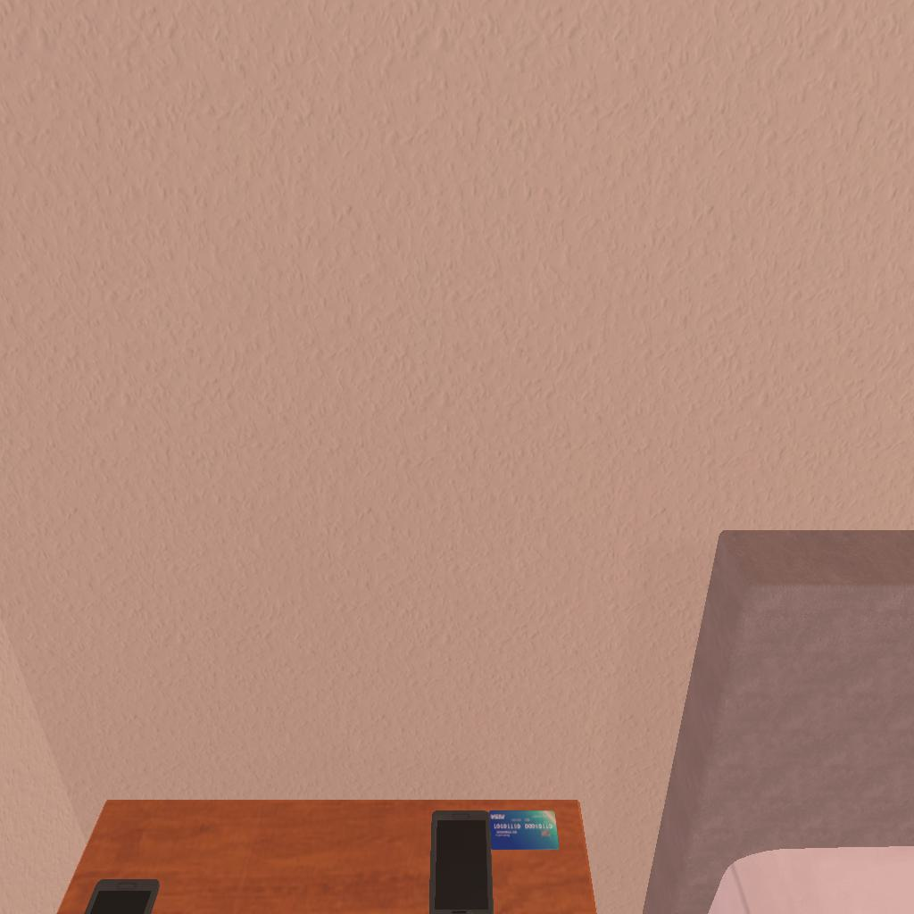

---------------------------------------------------------task: 6---------------------------------------------------------
--------------------------------------------------------------------------------------------------------------------------------------------------------------------
--------------------------------------------------------------------------------------------------------------------------------------------------------------------
Step:--------------------------------------------------------------------------0-------------------------------------------------------------------------------
----------------------------------------
VLM Prompt:
Image1:
**Instruction**
1. Analyze the provided image to identify all visible household objects, focusing on those relevant to the task description "put some cd on safe."
2. Use the analysis of the image and the task hint "The agent must find an object of the desired type, pick it up, find the correct location to place it, and put it down there." to answer the question: what is the most reasonable action in the choices for the task description "put some cd on safe"?
4. Decide and write the answer using the template: The answer is: (i): , where i is the real number. If there is no desired object in the image, search every place based on **Initial Observation** to find the object. And if no one is exactly correct, choose a similar answer.
**Initial Observation**
You are in the middle of a room. Looking quickly around you, you can see bed (1-2), dresser (1), sidetable (1-2), drawer (1-11), desk (1), garbagecan (1), safe (1)
**Answer Choices**
(1): go to bed 1
(2): go to dresser 1
(3): go to bed 2
(4): go to sidetable 1
(5): go to drawer 1
(6): go to drawer 2
(7): go to sidetable 2
(8): go to drawer 3
(9): go to drawer 4
(10): go to desk 1
(11): go to garbagecan 1
(12): go to drawer 5
(13): go to drawer 6
(14): go to drawer 7
(15): go to drawer 8
(16): go to drawer 9
(17): go to drawer 10
(18): go to drawer 11
(19): go to safe 1
**Answer**
Let's think step by step by following the instructions.
----------------------------------------
----------------------------------------
Original Response:
Image1 does not show any CDs, only a phone and a card on a sidetable. The task description is to put some CDs on safe, which means we need to find CDs first. Since CDs are not visible in the image, we need to search other places based on the Initial Observation.
CDs are typically stored in drawers, dressers, or desks where they can be organized and kept safe. They are not usually stored on beds, sidetables, or in garbage cans.
Based on this analysis, the most reasonable actions to find CDs would be to go to locations where CDs might be stored, such as dressers and drawers. Therefore, we can eliminate actions related to the bed, sidetables, garbage can, and desk, as these are less likely to contain CDs.
From the remaining choices, we need to decide which drawer or dresser to search first. Since we do not have any specific information about where the CDs might be, we can start with the first drawer or dresser listed.
The answer is: (2): go to dresser 1. If the CDs are not found there, the agent can continue to search the drawers.
----------------------------------------
----------------------------------------
>>> Refine Original VLM Response and Get Pure Action: go to dresser 1
----------------------------------------
-----------------------------------------------------------------
Running time: 11.885264873504639 seconds
Total Money: 1.7111499999999997
-----------------------------------------------------------------
-----------------------------------------------------------------
Text Observation:You arrive at loc 1. On the dresser 1, you see a bowl 1, a mug 1, a cd 1, and a pen 1.
-----------------------------------------------------------------
UNSUCCEED